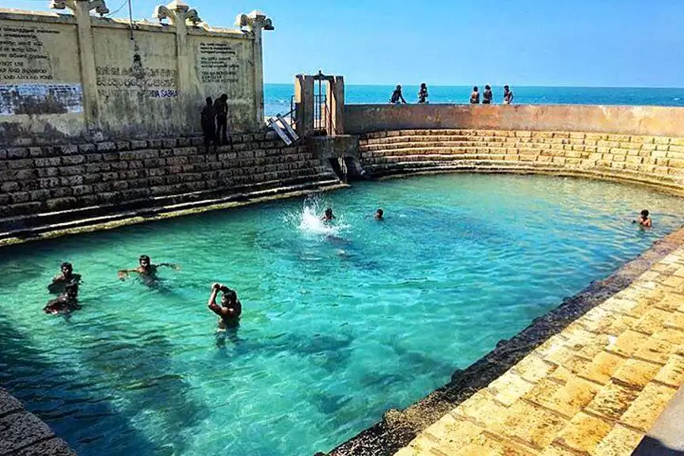

The Best Places to Travel in Northern Province...
Nallur Kandaswamy Kovil
 |
Nallur Kandaswamy Kovil (Tamil: நல்லூர் கந்தசுவாமி கோவில் Sinhala: නල්ලුරුව ස්කන්ධ කුමේාා) is an important Hindu temple, located in Nallur, Northern Province, Sri Lanka. God in charge by King Murugan in the form of a holy 'Vel' in Sanctum, the first holy place, and in other ways, namely, Shanmugar, Muthukumaraswami, Valli Kaanthar with consorts Valli and Deivayanai, and Thandayuthapani, participants in the high places of the temple.
Nagadeepa Purana Vihara
Nagadeepa Purana Vihara (Sinhala: නාගදීප පුරාණ විහාරය, Tamil: நயினாதீவு நாக விகாரை) is an ancient Buddhist temple located in the province of Jaffna in the northern province of Sri Lanka. It's in the middle of the world Sixteen Buddhist monasteries (Solosmasthana). According to modern history, the Gautama Buddha visited a place after five years of gaining Light to settle a dispute between two warring Naga kings, Chulodara. and Mahodara.An Ancient History According to the History of the Mahavamsa and the Tamil Buddhist Song Manimekalai A throne full of precious stones and monuments to the Buddha on the island of Nainativu, (also known as Nagadeepa) travelers from India are visited.
Keerimalai Pond
|  |
Keerimalai (Tamil: கீரிமலை kīrimalai) is a town located in the Jaffna Prefecture, Sri Lanka. The Naguleswaram Temple is located in the downtown area and has a mineral water source called Keerimalai Springs famous for its medicinal properties. In Tamil Keerimalai means Mongoose-Hill, see Naguleswaram temple. Keerimalai is located 25 km from Jaffna.